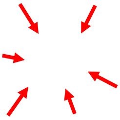
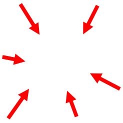
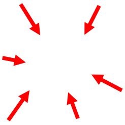
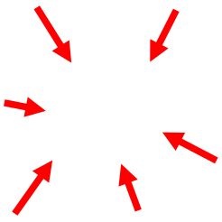

some things i am...
 



I created a polymetric, polyrhytmic, microtonal music making software thingy! I wanted to
encourage new instrumental idioms in software-based sound creation/exploration. gemuPG is coded
in C++ using SDL3 and Dear ImGui and its source code is available on the IEM GitLab.
The project was presented as a poster presentation at AES Europe 2025 and made second place at
the 2025
Saul Walker Design Competition.
My bachelor thesis is available here, but I'm still developing this further, I
swear!
Inspired by the game Electroplantkon for the Nintendo DS I created a three dimensional sound
sandbox. You
can shoot sound particles that, depending on the type, either play continouous sounds or only
play a
percussive sound on collision. The sound particles' pitch is determined by their speed, their
'harmonic
richness' is controlled by size. Additionally, the particles' lifetime can be controlled. All
parameters can
also be randomised when firing. Lastly, additional collisiders can be placed with a separate
selectable
tool. The sound particles are encoded via ambisonics allowing for immersive playback in a
variety of setups.
I made this in Godot, where I send OSC messages to SuperCollider, which makes the sound
synthesis magic
happen. SuperCollider outputs 3rd order ambisonics data to Reaper via ReaRoute, where any
decoder can be
chosen for output.
A project made in Pure Data with Luca Candussi and Maximilian Helligrath.
We deterministically convert audio to an image and back again. A CD quality audio file is taken and each
16 Bit sample converted into 2/3 of a pixel (two 8 Bit colour channels). Thus, three samples make up two
pixels of an image. This is repeated in a spiral pattern for a 144x255 pixel image. After this, the
image can be losslessly converted back to an audio file. We want to show the lossiness of conversion
through different colour spaces, as well as perception through air. Nothing is colour accurate and this
can be sonically perceived through the distortion of the original file, which is re-scanned with a
camera recording different screens. (LCD, CRT, projector, printer, etc.)
Pure Data externals utilising OpenCV for automatic crop and deskew were programmed.


<-
Previous->
Nexti develop and scan at home...